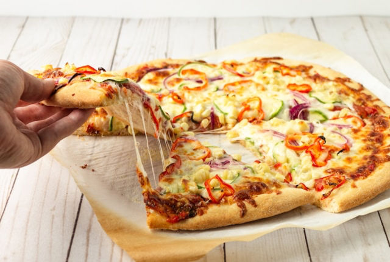
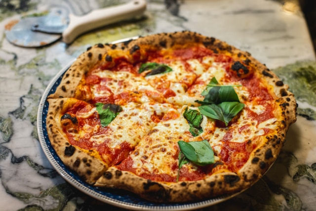

Koz`s Food Truck enjoys serving you fresh, hot from the oven pizza wherever you are. Pizza maker Kevin Kozlowski, long known by his friends as Koz, started his first Pizza food truck in 2000 and has continued to refine his craft over the years. Today, Koz has 5 Pizza food trucks spread across the Carolinas.
Our mission is to bring satisfaction in the form of delicious, hand-crafted pizzas made from the freshest, quality ingredients. Stop to enjoy some of our pizza during lunch with your co-workers or after your happy hour with your family and friends!
Visit our website to find one of our locations in downtown Charlotte, Fort Mill, and Rock Hill open from 11a.m. to 11p.m. Sunday-Thursday and 11a.m. to 3a.m. Friday and Saturday! Grab a slice or a whole pie and taste the difference today!
Contact us for catering or to bring one of our Trucks to a private event or party and taste what the Charlotte Observer is calling one the most exquisite Pizza’s from one of the most unexpected locations!